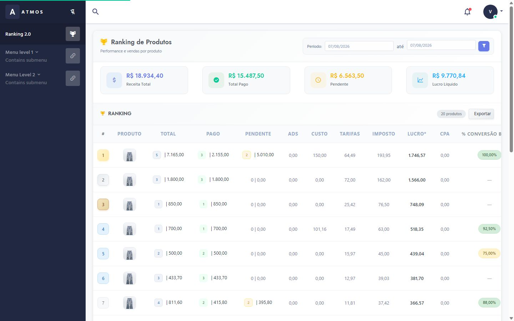
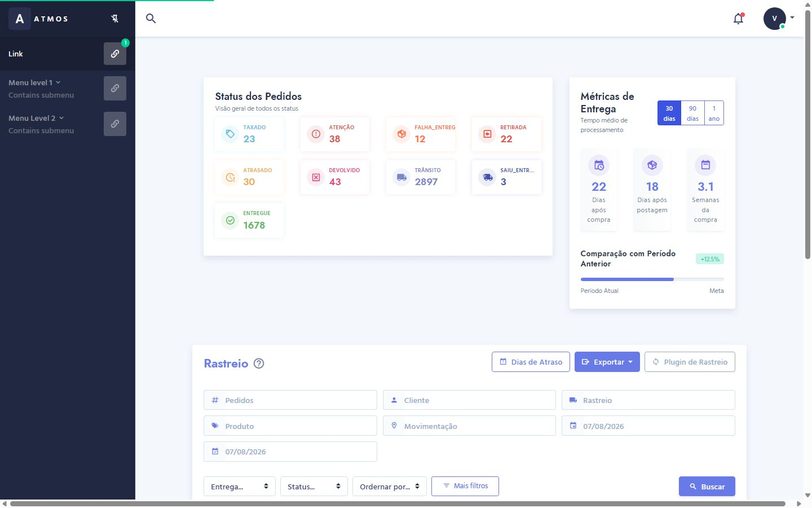
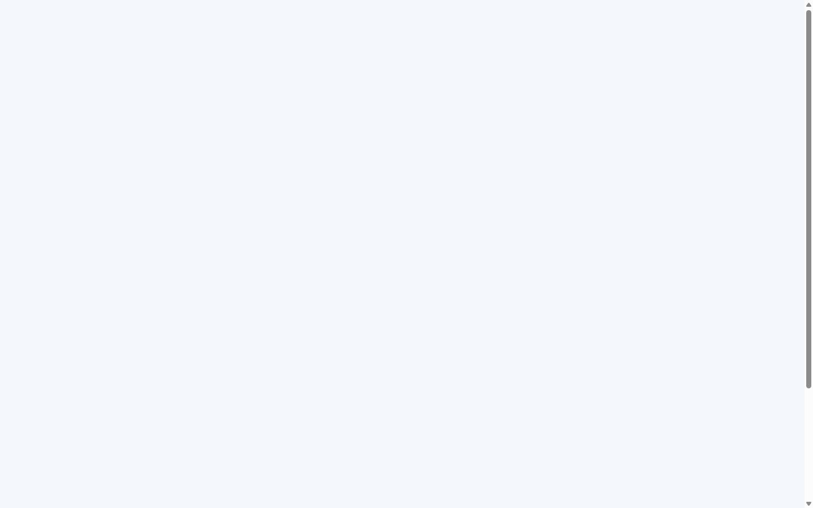
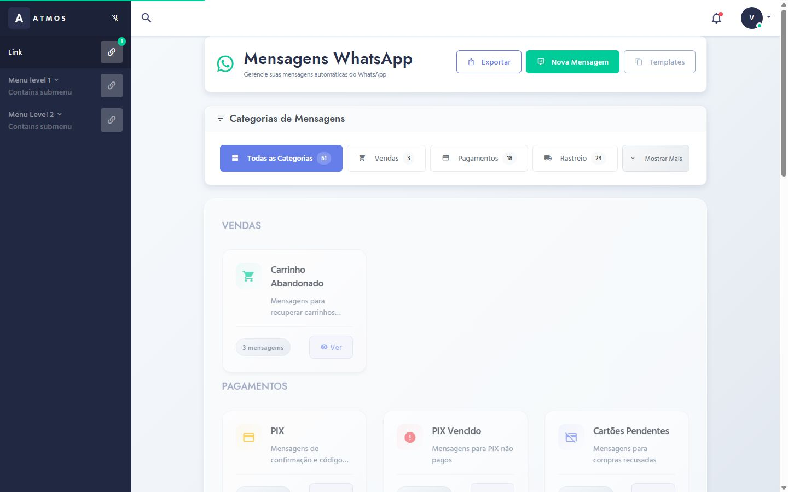

Redesign Visual & UI/UX da Plataforma UnicoDrop
Um estudo de caso sobre como transformamos uma aplicação legada de e-commerce e logística em um sistema SaaS moderno, veloz e focado na clareza visual dos dados operacionais dos lojistas.

Desafios Encontrados no Sistema Antigo
Antes do redesign, a plataforma enfrentava queixas recorrentes de lojistas relacionadas à poluição visual e dificuldade em tomar decisões rápidas.
Excesso de Ruído Visual
Métricas críticas como faturamento total, custo de produto e lucro líquido estavam misturadas em tabelas densas sem hierarquia de fonte e cor.
Falta de Padrão Mobile
O layout quebrava em telas menores, forçando o usuário a utilizar rolagens horizontais desconfortáveis para visualizar códigos de rastreamento.
Complexidade em Ações
Tarefas simples como ajustar valores de custo ou filtrar pedidos por data exigiam múltiplos cliques em modais mal posicionados.
Construindo um Design System Escalável
Para garantir consistência visual entre todas as telas, desenvolvemos um conjunto de regras, padrões tipográficos e tokens de cores no Figma.
Paleta de Cores SaaS (Dark Enterprise)
Hierarquia Tipográfica
Utilizado para títulos principas, KPIs e navegação.
Utilizado para tabelas de pedidos, relatórios e textos de suporte.
Telas & Módulos Criados para a UnicoDrop
Navegue abaixo pelas páginas desenvolvidas no projeto. Clique no botão de cada tela para abri-la e testar a interface ao vivo.
Ranking de Produtos & Performance
Desenvolvimento de painel consolidado com cards de Receita Total, Total Pago, Pendente e Lucro Líquido, acompanhado de tabela interativa ordenando produtos por volume de vendas e taxa de conversão.

Central de Rastreio de Pedidos
Interface com busca universal por código de rastreamento, filtros de transportadoras (Anjun, 360lion, Sunyou, YunExpress) e cópia rápida em 1 clique com feedback visual.

Dashboard Financeiro & DRE
Módulo com visão consolidada de entradas, saídas, margem bruta de operação e gráficos demonstrativos da evolução financeira diária e mensal.

Automação de WhatsApp com QR Code
Painel de integração de disparo de mensagens automáticas de confirmação de pedido, código de rastreamento e recuperação de boletos/PIX.
Resultados Obtidos Pós-Redesign
Eliminação de elementos desnecessários e foco na hierarquia dos números operacionais.
Localização imediata de códigos de rastreio e relatórios com os novos filtros.
Facilidade de manutenção em código com componentes reutilizáveis em React/Tailwind.